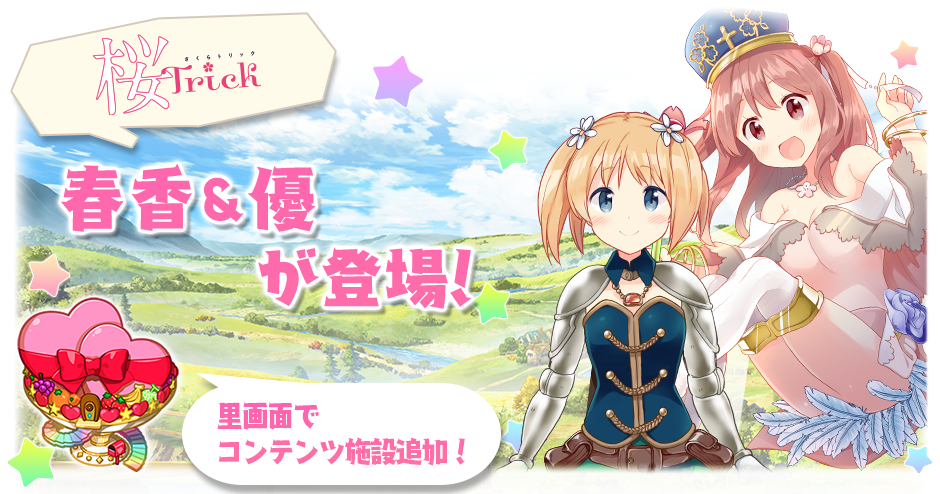
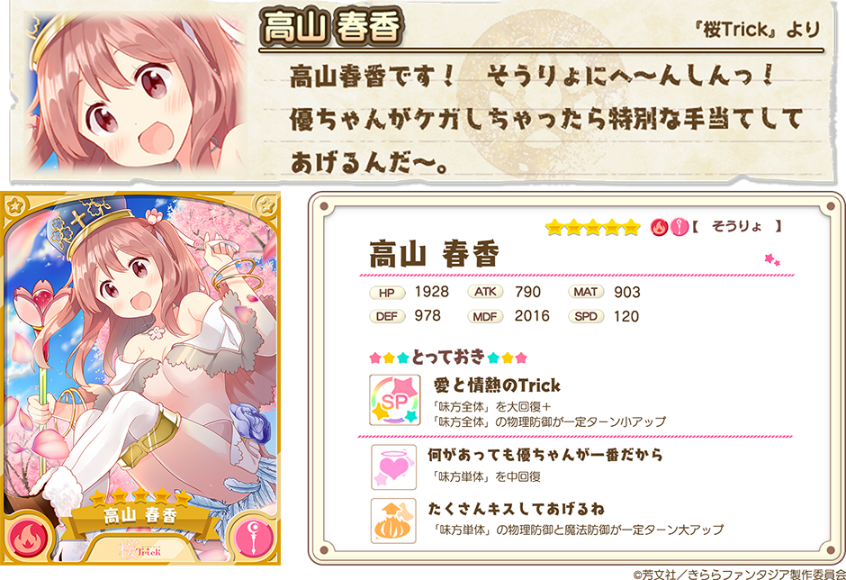
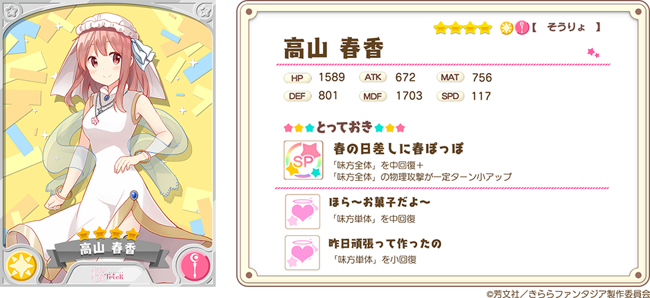
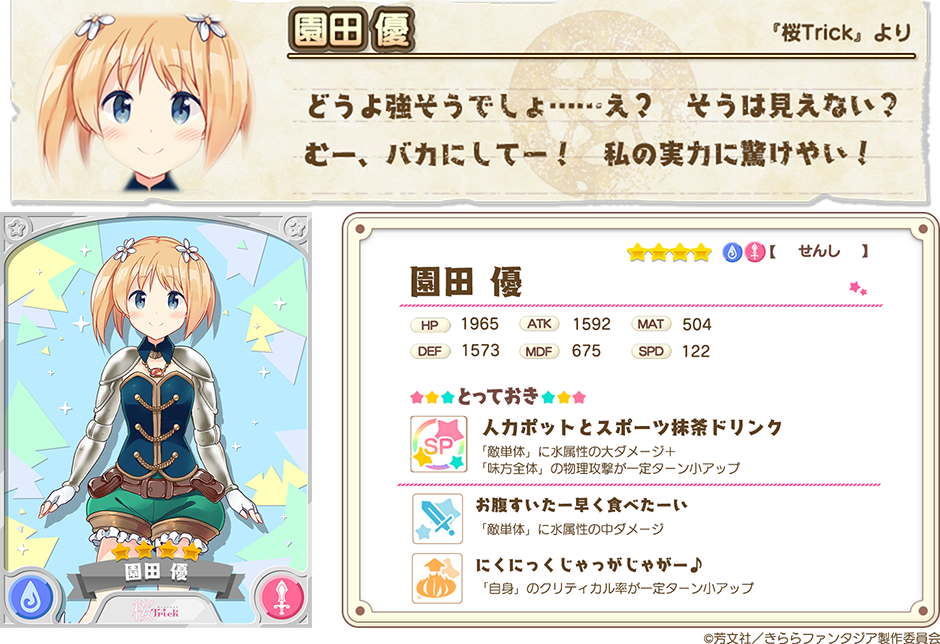

『きららファンタジア』をご利用いただき、誠にありがとうございます。
12月27日17:00より、「新規キャラクターピックアップ召喚」を開催いたします。
「桜Trick」より春香（CV.戸松遥）と優（CV.井口裕香）がきららファンタジアに飛び入りで登場！
2017年12月27日 17:00 ～ 2017年12月30日 13:59
・10回召喚では★4以上のキャラクターが1体以上確定します。
・初回のみ星彩石300個で10回召喚が可能です。
・期間中は、ピックアップ対象キャラクターの提供割合がアップしています。

さらに、「桜Trick」のコンテンツ施設「ピュアーズガーデン」が追加されます。
※「ピュアーズガーデン」は新規キャラクターピックアップ召喚と同時に里で建設可能になります。



※表示されているキャラクターイラストは進化前のものです。
※表示されているステータスは、進化前キャラクターの最大LV（限界突破4回）時のものです。
さらに★3春香（アルケミスト）、★3優（せんし）も召喚に追加されています。
※★3春香（アルケミスト）、★3優（せんし）も新規キャラクターピックアップ召喚のピックアップ対象となります。
・提供割合の詳細はゲーム内の召喚画面＞提供割合からご確認ください。
・ピックアップ対象のキャラクターは同じレアリティの他のキャラクターよりも提供割合が高く設定されています。
・キャンペーン内容は予告なく変更になる場合がございます。ご了承ください。
今後とも『きららファンタジア』をよろしくお願い申し上げます。